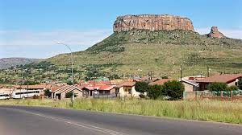
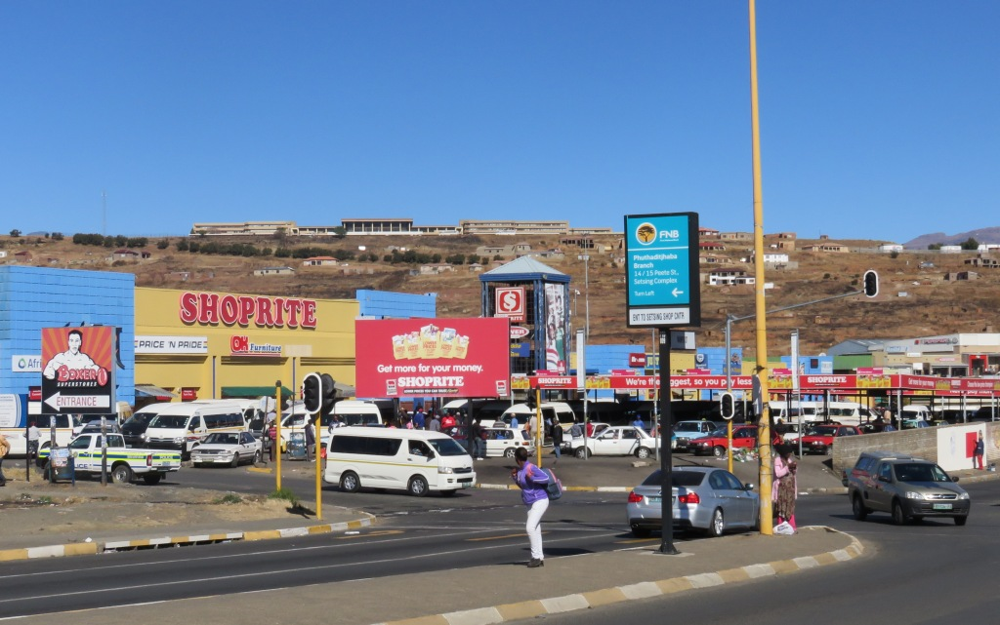

QwaQwa was a bantustan ("homeland") in the central eastern part of South Africa. It encompassed a very small region of 655 square kilometres (253 sq mi) in the east of the former South African province of Orange Free State, bordering Lesotho.
 